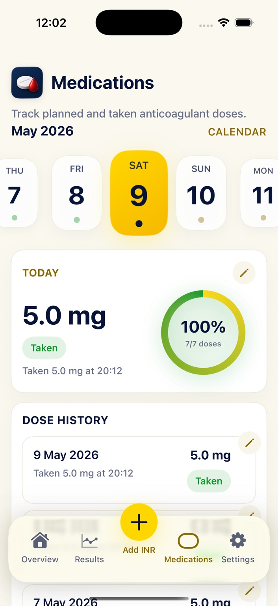
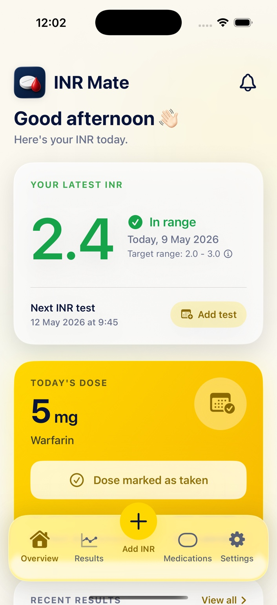
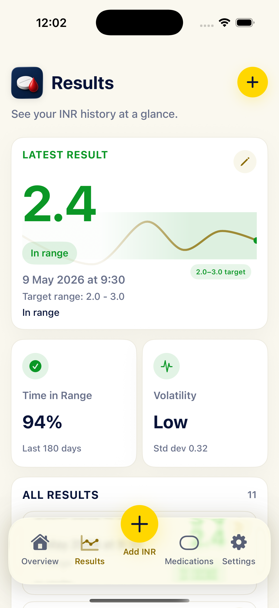
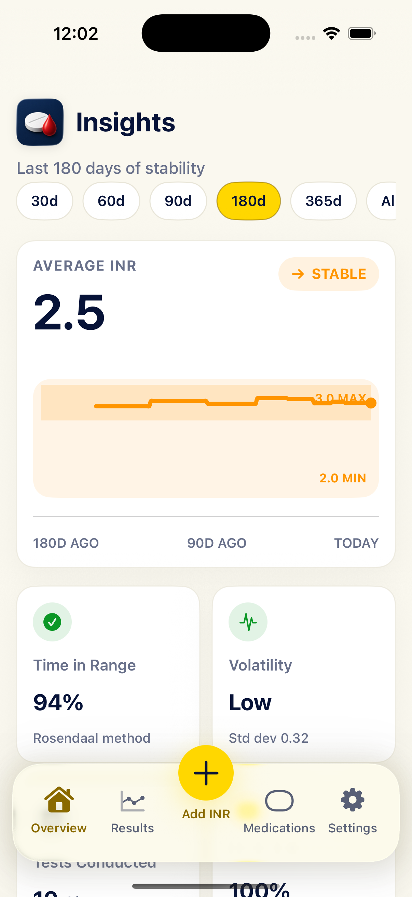

Dose records
Track planned and taken doses
Log warfarin doses, one-off changes and recent history in a calm, readable layout.
INR Mate helps you record INR results, log warfarin doses, set reminders, review trends and keep appointment-ready records across iPhone, iPad and Apple Watch.
For tracking and record keeping only. INR Mate does not provide medical advice or dosing recommendations.

Nine years ago, I had an episode of chest pain that unexpectedly changed the course of my life.
At first, the concern was a possible pulmonary embolism. I had blood tests, was started on anticoagulant injections, and came back a few days later for a CT scan. The scan did not show a clot on my lung, but it did find something else: a 5.2 cm aneurysm at the root of my aorta.
Further tests showed that I had a functionally bicuspid aortic valve. Eight weeks later, I was admitted to James Cook University Hospital for open-heart surgery: an aortic valve replacement and repair of the aneurysm with a Dacron sleeve.
Because I now had a mechanical aortic valve, I was started on warfarin and told I would need to take it for the rest of my life.
I went home just under a week after surgery on 5 mg of warfarin daily, with regular INR checks from the anticoagulation team. Over the first week at home, I became more and more breathless. Eventually, I could barely walk 100 yards without stopping to catch my breath.
An INR check showed my INR was 9.7. Soon afterwards, I called into the A&E department where I worked at the time, just to say hello and show my colleagues I was still alive. By the time I arrived, I was so breathless I could barely speak. The consultant on duty took one look at me, put me in a room, and admitted me.
An echocardiogram showed fluid around my heart, most likely blood. I was transferred back to James Cook and monitored closely. Over the next couple of days, I deteriorated until I could not breathe properly even sitting up in bed. I was taken back to theatre, where they drained 800 ml of blood from around my heart, with more drained afterwards on the ward.
After another week in hospital, I was discharged home again. Thankfully, I have been fine since.
That experience made warfarin and INR monitoring feel very real, very quickly.
Like many people on warfarin, I was given the yellow anticoagulation book. It works, but I never liked having to carry it around or rely on paper for something that had become such an important part of my life. I looked for an app that could help me track my INR, warfarin doses, reminders and notes, but nothing felt quite right. Some apps did not feel native to the iPhone. Others were missing features I wanted. I kept hoping Apple might eventually add proper INR and warfarin tracking to the Health app, but it never came.
So I decided to build it myself.
INR Mate is the app I wanted as both a patient and a clinician: clear, private, practical, and designed specifically for people who take warfarin.
Keep the important things close: your latest reading, today’s dose, upcoming tests, recent dose history and the longer-term picture when you need it.

Log warfarin doses, one-off changes and recent history in a calm, readable layout.
Record readings with dates, notes and target range context. Pro unlocks full history and insights.

Unlock full INR and dose history, trends, TTR-style analysis, exports, iCloud sync, iPad dashboard, Apple Watch support, widgets and complications.

Free users can keep adding readings and doses. INR Mate Pro unlocks the archive, analysis and Apple-device extras.
Get INR MateAdd INR readings and warfarin dose records. View your latest INR and recent doses.
See full history, trends, insights, exports, iCloud sync, iPad, Apple Watch, widgets and complications.
Built for people who want a straightforward record of their warfarin and INR routine, without turning tracking into a second job.
Private by design · Calm by default · Built for Apple devices
Download INR Mate from the App Store for iPhone, iPad and Apple Watch. Subscribe to INR Mate Pro in-app when you want full history, insights, exports and sync.